20131230
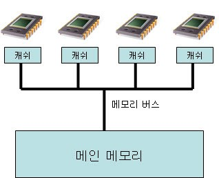
http://m.blog.naver.com/PostView.nhn?blogId=jjoommnn&logNo=130040773099&categoryNo=0¤tPage=6&sortType=recent&isFromList=true
Memory Visibility
한 Thread에서 변경한 특정 메모리의 값이, 다른 Thread에서 제대로 읽어지는지가 라고 할 수 있다.
CPU의 메모리 아키텍쳐 - 레지스터와 캐시
Memory Barrier
중앙 처리 장치나 컴파일러에게 특정 연산의 순서를 강제하도록 하는 기능이다.
이 메모리 장벽을 만나면, 그전까지 코어(CPU)의 레지스터나 캐쉬값의 변경을 메인 메모리로 반영하는 것이라고 할 수 있다.
- volatile, synchronized block, java.util.concurrent.locks, java.util.concurrent.atomic, instruction reordering
reentrant vs thread-safe
reentrant - no global variable, no static variable, only stack variable
여러 쓰레드가 동시에 코드를 실행할 수 있고 실행하여도 correctness가 보장
thread-safe - lock
여러 쓰레드가 동시에 코드를 실행하여도 correctness가 보장
http://blog.naver.com/PostView.nhn?blogId=jjoommnn&logNo=130037479493
Mutex(Mutual Exclusion)
동기화 대상이 하나인 Semahore
Semaphore - 신호등(?)
동기화 대상이 여러개, Edsger Wybe Dijkstra
http://findnamo.tistory.com/34
Explicit Locks VS Implicit Locks
java.util.concurrent.locks VS synchronized block
Shared Lock(Read Lock) VS Exclusive Lock(Write Lock)
http://www.slideshare.net/zzapuno/kgc2013-3
http://www.slideshare.net/zzapuno/ndc12-2
CAS(Compare And Swap)
ABA Problem
20131228
Memcached VS ehcache VS redis
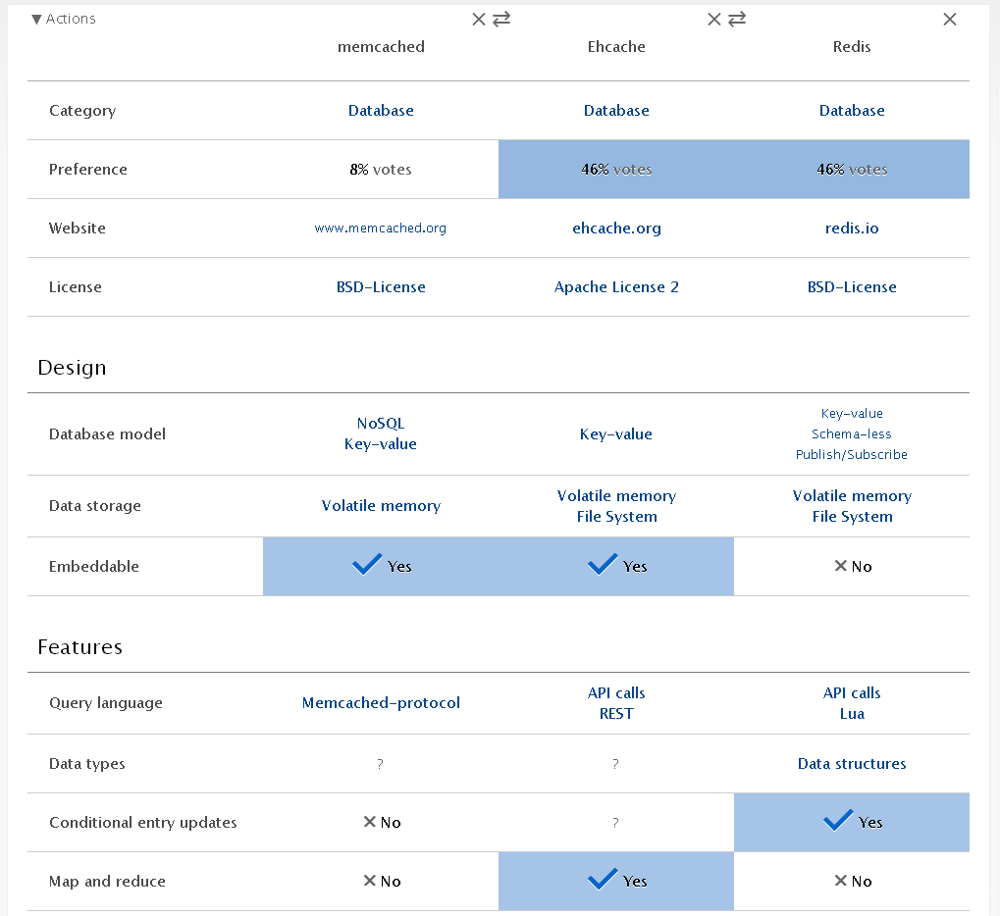
http://vschart.com/compare/memcached/vs/ehcache/vs/redis-database
Graphite
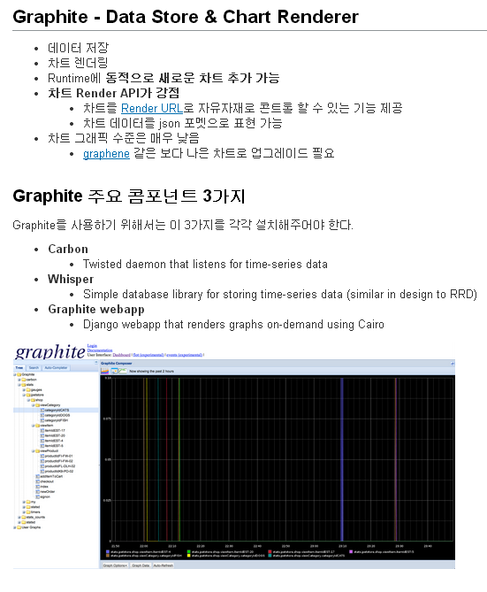
http://tedwon.com/pages/viewpage.action?pageId=48365621
20131223
intellij idea.properties
auto.show.quick.doc=true
20131222
HTML로 UI만드는 것이 Swing으로 UI 만드는 것보다 개발속도도 빠르고 더 이쁘다.
20131221
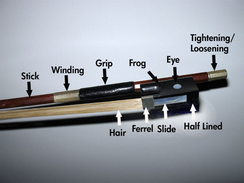
http://thebluegrassshack.blogspot.kr/2011/12/fiddle-bows-primer-part-1.html
Round bow
Octagonal bow
20131214
20131213
IntelliJ Tuning
-server
-Xms128m
-Xmx512m
-XX:MaxPermSize=250m
-XX:ReservedCodeCacheSize=64m
-XX:+UseConcMarkSweepGC
-XX:+AggressiveOpts
-XX:+CMSClassUnloadingEnabled
-XX:+CMSIncrementalMode
-XX:+CMSIncrementalPacing
-XX:CMSIncrementalDutyCycleMin=0
-XX:-TraceClassUnloading
-ea
-Dsun.io.useCanonCaches=false
-Djava.net.preferIPv4Stack=true
-Dfile.encoding=UTF-8
http://blog.naver.com/PostView.nhn?blogId=pciswife&logNo=100194896722
20131210
IntelliJ Shortcut
Ctrl + Alt + F7 : Show usages
Ctrl + G : Find usages
Ctrl + Alt + G : Find usages in File
Ctrl + K : Next Occurence
Ctrl + Shift + K : Previous Occurence
Ctrl + Alt + Shift + Down : Next Change
Ctrl + Alt + Shift + Up : Previous Change
Ctrl + F7 : Next Change in diff view
Shift + F7 : Previous Change in diff view
Alt + S , S, v : Compare with Last Repository with Version
http://stackoverflow.com/questions/294167/what-are-the-most-useful-intellij-idea-keyboard-shortcuts
20131207
Live Template
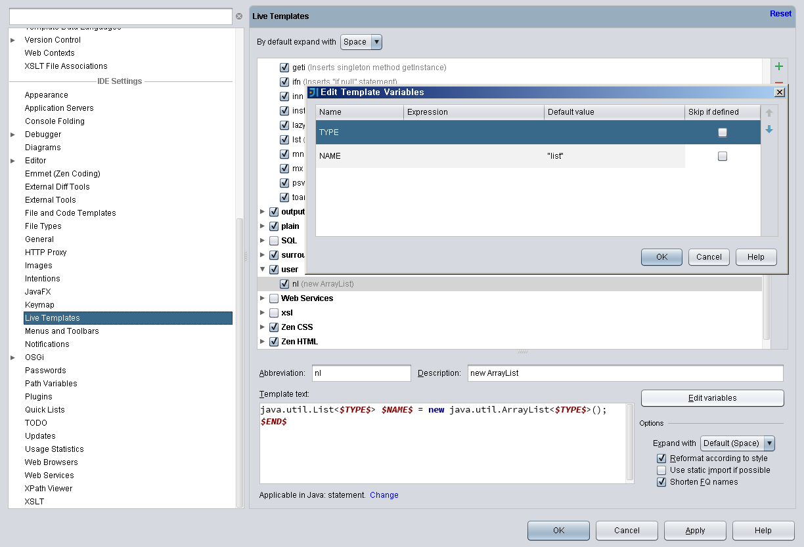
20131205
issue tracking
team collaboration
continuous integration, deployment, and release management
revision-control browser
 code review
code coverage
code review
code coverage
20131204
How long should I wait?
How long does it take to get there?
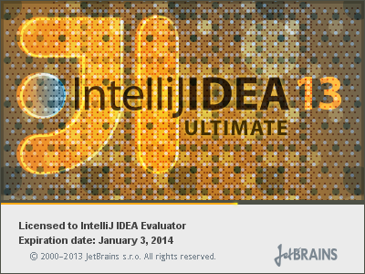
Subversion error.
Where is the nimbus?
20131202
IntelliJ 대한 아쉬움
File : link to in the file system
Tomcat: ajp port 설정
SVN : Label Decoration
Project: 멀티 프로젝트
Maven : run될때 provided library class path에 포함되지 않음
20131129
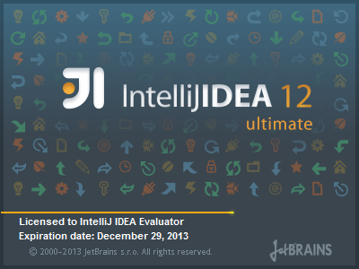
Tomcat VM Options
-Dtomcat.ajp.port=50011 -Dfile.encoding=UTF-8
The company's motto is "Develop with pleasure!"
http://en.wikipedia.org/wiki/JetBrains
20131127
20131125
20131120
 http://developer.android.com/google/gcm/index.html
Java
-Xss256k
The thread stack size.
ShellScript
launchFileName=`echo $serviceName | sed -e "s/-/\./g"`
Vi
W: move to next word
B: move to previous word
http://developer.android.com/google/gcm/index.html
Java
-Xss256k
The thread stack size.
ShellScript
launchFileName=`echo $serviceName | sed -e "s/-/\./g"`
Vi
W: move to next word
B: move to previous word
20131116
http://blog.daum.net/gdocument
Grumpy old troll
I'm the grumpy old troll who lives under the bridge.
Hey, I'm the grumpy old troll who lives under the brigde.
who's there?
If you wanna come over, all you have to do is this.
All you have to do is this.
Slove my riddle.
20131115
Devices with -webkit-min-device-pixel-ratio: 1.0
All non-Retina Macs
iPhone (1st generation)
iPhone 3G
iPhone 3GS
iPad (1st generation)
iPad 2
iPad mini (1st generation)
Acer Iconia A500
Samsung Galaxy Tab 10.1
Samsung Galaxy S
Devices with -webkit-min-device-pixel-ratio: 1.3
Asus MemoPad HD 7
Google Nexus 7 (2012 model)
Devices with -webkit-min-device-pixel-ratio: 1.5
Google Nexus S
HTC Desire
HTC Desire HD
HTC Incredible S
HTC Velocity
HTC Sensation
Kindle Fire HD
Samsung Galaxy S II
Xperia U
Devices with -webkit-min-device-pixel-ratio: 2.0
All Macs with Retina displays
iPhone 4
iPhone 4S
iPhone 5
iPhone 5c
iPhone 5s
iPad (3rd generation)
iPad 4
iPad Air
iPad mini (2rd generation)
HTC One X
Google Galaxy Nexus
Google Nexus 4
Google Nexus 7 (2013 model)
Google Nexus 10
Samsung Galaxy S III
Samsung Galaxy Note II
Sony Xperia S
Devices with -webkit-min-device-pixel-ratio: 3.0
HTC Butterfly
Nexus 5
Samsung Galaxy S4
Sony Xperia Z
http://bjango.com/articles/min-device-pixel-ratio/
20131112
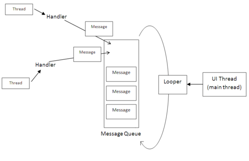
http://www.aviyehuda.com/blog/2010/12/20/android-multithreading-in-a-ui-environment/
Accessing UI thread
Handler
Activity.runOnUIThread(Runnable)
View.post(Runnable)
View.postDelayed(Runnable, long)
AsyncTask
AsyncQueryHandler
NotifyingAsyncQueryHandler
WeakAsnycTask
http://ecogeo.tistory.com/252
20131107
IIFE
Immediately-invoked function express(IIFE, pronounced "iffy")
(function() {
/* Hello, World! */
}());
cat [logFile] | awk '{print $1}' | sort | uniq -c | sort -nr
20131028
http://beliefsoftheheart.com/2012/10/23/why-do-we-flee-from-a-sense-of-emptiness/
http://fokkusunm.deviantart.com/art/Good-emptiness-347041275
젊음, 사랑, 지식(경험), 돈
언어의 한계가 곧 자기 세계의 한계다.
The limits of my language mean the limits of my world.
- 루트비히 비트겐슈타이(Ludwig Wittgenstein)
진보라는 것은 변화와는 거리가 멀고 오히려 기억에 의존하다.
과거를 기억하지 못하는 사람은 과거를 반복할 운명이다.
- 조지 산타야나(George Santayana)
가장 속이기 쉬훈 사람은 자기 자신이다.
- 에드워드 불위-리톤(Edward Bulwer-Lytton)
1. 자신의 기술에 관심과 애정을 가져라.
2. 자신의 일에 대해 생각하면서 일하라!
3. 어슬픈 변명을 만들지 말고 대안을 제시하라.
4. 깨진 창문을 내버려두지 말라.
5. 변화의 촉매가 되라.
6. 큰 그림을 기억하라.
7. 품질의 요구사항을 만들어라.
8. 지식 포트폴리오에 주기적으로 투자하라.
9. 읽고 듣는 것을 비판적으로 분석하라.
10. 무엇을 말하는가와 어떻게 말하는가 모두 중요하다.
11. DRY - 반복하지 마라.
12. 재사용하기 쉽게 만들라.
13. 관련 없는 것들 간에 서로 영향이 없도록 하라.
14. 최종 결정이란 없다.
15. 목표물을 찾기 위해 예광탄을 써라.
16. 프로토타입을 통해 학습하라.
17. 문제 도메인에 가깝게 프로그래밍하라.
18. 추정을 통해 놀람을 피하라.
19. 코드와 함계 일정도 반복하여 조정하라.
20. 지식을 일반 텍스트로 저장하라.
21. 명령어 셀의 힘을 사용하라.
22. 하나의 에디터를 잘 사용하라.
23. 언제난 소스코드 관리 시스템을 사용하라.
24. 비난 대신 문제를 해결하라.
25. 디버깅을 할 때 당활하지 마라.
26. 'select'는 망가지지 않았다.
27. 가정하지 마라. 증명하라.
28. 텍스트 처리 언어를 하나 익혀라.
29. 코드를 작성하는 코드를 작성하라.
30. 완벽한 소프트웨어는 만들 수 없다.
31. 계약에 따른 설계를 하라.
32. 일찍 작동을 멈추게 하라.
33. 단정문을 사용해서 불가능한 상황을 예방하라.
34. 예외는 예외적인 문제에 사용하라.
35. 시작한 것은 끝내라.
36. 모듈간의 결합도를 최소화하라.
37. 통합하지 말고 설정하라.
38. 코드에는 추상화를, 메타데이터에는 세부 내용을
39. 작업흐름 분석을 통해 동시성을 개선하라.
40. 서비스를 사용해서 설계하라.
41. 언제난 동시성을 고려해 설계하라.
42. 모듈에서 뷰를 분리하라.
43. 칠판을 상요해 작업흐름을 조율하라.
44. 우연에 맡기는 프로그램을 하지 말라.
45. 여러분 알고리즘의 차수를 추정하라.
46. 여러분의 추정을 테스트하라.
47. 일찍 리팩터링하고, 자주 리팩터링하라.
48. 테스트를 염두에 두고 설계하라.
49. 소프트웨어를 테스트하라. 그렇지 않으면 사용자가 테스트하게 될 것이다.
50. 자신이 이해하지 못하는, 마법사가 만드어 준 코드는 사용하지 말라.
51. 요구사항을 수집하지 말고 채굴하라.
52. 사용자처럼 생각하기 위해 사용자와 함께 일하라.
53. 구체적인 것보다 추상적인 것이 더 오래간다.
54. 프로젝트 용어사전을 사용하라.
55. 생각의 틍을 벗어나지 말고, 틀을 찾아라.
56. 준비가 되었을 때 시작하라.
57. 어떤 일들을 설명하기보다 실제로 하는 것이 쉽다.
58. 형식적 방법의 노예가 되지 마라.
59. 비싼 도구가 더 좋은 설계를 낳지는 않는다.
60. 팀을 기능 중심으로 조직하라.
61. 수작업 절차를 사용하지 말라.
62. 일찍 테스트하고, 자주 테스트하라. 자동으로 테스트하라.
63. 모든 테스트가 통과하기전에 코딩이 다 된 게 아니다.
64. 파괴자를 써서 테스트를 테스트하라.
65. 코드 커버리지보다 상태 커버리지를 테스트하라.
66. 버그는 한 번만 잡아라.
67. 한국어도 하나의 프로그래밍 언어인 것처럼 다루라.
68. 문서가 애초부터 전체의 일부가 되게 하고, 나중에 집어넣으려고 하지 말라.
69. 사용자의 기래들 부드럽게 넘어서라.
70. 자신의 작품에 서명하라.
20131027
모든 것은 변해 가겠지.
그 아련한 순수함 마져도.
그 아련한 열정도.
남은 것은 아무것도 없겠지.
멀어져만 가는 그대 You’re the only one
내가 사랑했던 것만큼 You’re the only one
아프고 아프지만 바보 같지만 Good bye
다시 널 못 본다 해도 You’re the only one
Only One
어색하게 마주앉아
사소한 얘기로 안부를 묻고
가끔 대화가 끊기는 순간에는
차가운 정적 우릴 얼게 만들어
지금 이 자리에서 우리는 남이 되겠지
어느 누군가는 눈물 흘리며 남겠지만
상처주지 않으려고 자꾸 애를 써가면서
눈치 보는 니 모습 싫어 So I’ll let you go
내사랑 이제는 안녕 You’re the only one (You’re the only one)
이별하는 이순간에도 You’re the only one
아프고 아프지만 바보 같지만 Good bye
다시 널 못 본다 해도 You’re the only one
Only One
You’re the only one, Only One
갑작스런 나의 말에
왠지 모르게 넌 안심한듯해
어디서부터 우린 이렇게 잘못된 걸까
오래 전부터, 다른 곳만, 기대한 건 아닌지
너무 다른 시작과 끝의 그 날카로움이
내 심장을 찌르는 아픔은 왜 똑같은지
벅찬 가슴이 한 순간에 공허하게 무너져서
이런 내 모습 어떻게 일어설까
내사랑 이제는 안녕 You’re the only one (Only One)
이별하는 이순간에도 You’re the only one
아프고 아프지만 바보 같지만 Good bye (Good bye)
다시 널 못 본다 해도 You’re the only one (You’re the only one)
내 머릿속은 언제쯤 너를 지울까 (I will let you go)
하루 이틀 한달, 멀게는 아마 몇 년쯤 (My baby can't forget)
그리고 언젠가 너의 기억 속에는
나란 사람은 더 이상 살지 않겠지 지우겠지
Only One
Only One
You’re the only one, Only One
20131023
adb shell "run-as package_name cat databases/db_file > /mnt/sdcard/test/db_file
adb pull /mnt/sdcard/test/db_file
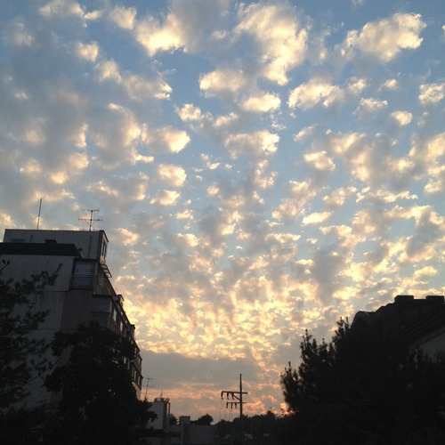
20131015
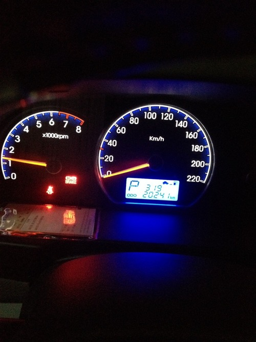
20131003
&
20130930
AWS: Amazone Web Services
EC2: Elastic Cloud Compute
S3: Simple Storage Service
SNS: Simple Notification Service
ELB: Elastic Load Balancing
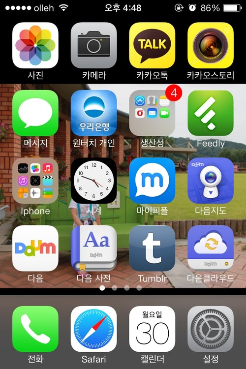
20130920
20130919
김포
행주
방화
가양
성산(월드컵경기장/서부간선도로)
양화(합정역/선유도)
서강(6호선광흥창역/국회의사당)
마포(마포역/여의도공원)
원효
한강
동작(국립중앙박물관/동작역)
반포
한남(남산1호터널/경부고속도)
동호(옥수역/압구정역)
성수(서울의숲)
영동
청담(뚝섬/청담역)
잠실(잠실역)
올림픽(서울아산병원)
천호(광나루역/천호역)
광진
20130917
20130915
20130908
20130906
20130901
살다 보면 화나는 일도 많지만, 분노를 품어선 안된다.
세상엔 아름다움이 넘치니까.
갑작스럽고 멋진 아름다움을 느끼는 순간,
가슴이 벅찰 때가 있다.
터질 듯이 부푼 풍선처럼.. .
하지만 마음을 가라앉히고,
집착을 버려야 한다는 걸 깨닫게 되면
희열이 몸 안에 빗물 처럼 흘러
오직 감사의 마음만이 생긴다.
여러분 무슨 뜻인지 어렵나요?
하지만 걱정 마세요 언젠가는 알게 될 테니까.
- American beauty
20130826
20130825
20130820
mysqldump -u username -ppassword database_name > dump.sql
mysqldump -u username -ppassword –no-data database_name > dump.sql
mysql -u username -ppassword database_name < dump.sql
20130816
20130815
20130814
route add 0.0.0.0 mask 0.0.0.0 192.168.0.1 metric 1
20130814
20130813
epiglottis
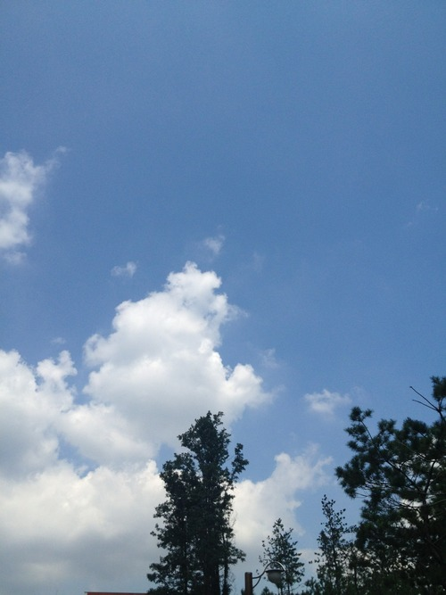
20130812
20130808
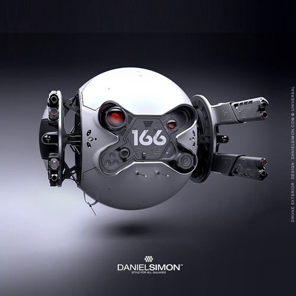
20130805
20130731
Promenade
20130726
Amnesia
20130723
흑체복사의 문제란 물체의 온도에 따라 왜 다른 색깔의 빛이 나오는지를 설명하는 문제였다.
http://www.seehint.com/r.asp?no=12911
20130722
구조는 눈에 잘 들어오지만, 흐름은 쉽게 놓쳐 버린다.
http://neo_turing.blog.me/20141649406
책을 봤지만 내용이 기억나지 않고
영화를 봤지만 내용이 기억나지 않으며
인생을 살았지만 어떻게 살았는지 기억이 나지 않는다.
20130719
20130709
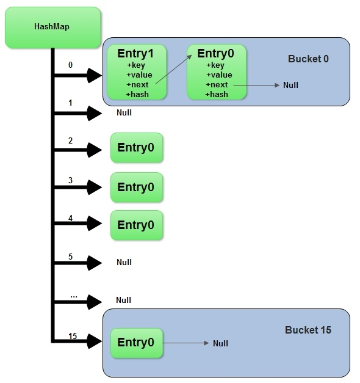
http://stacktrace.in/what-happens-when-you-call-hashmap-put-and-hashmap-get-method-in-java/
20130705
org.springframework.web.context.WebApplicationContext.ROOT
org.springframework.web.servlet.FrameworkServlet.CONTEXT.service
20130704
Everybody's going to the party have a real good time.
constellation
compassion
ensemble
20130703
모든게 조금씩 이해가 된다.
인생은 꿈.
http://www.idomin.com/news/articleView.html?idxno=372152
20130702
치유받고 싶다.
20130626
TTY: TeleTYpe
VT100: Virtual Terminal
20130615
코딩 하듯이 운동하자.
20130613
ps -ef | grep httpd | grep -v grep | awk '{print $2}' | xargs kill -9
tcpdump -i eth0 -s0 -vv host 239.192.100.59
20130612
어제와 똑같이 살면서 다른 미래를 기대하는 것은 정신병 초기증세이다.
Insanity: doing the same thing over and over again and expecting different results.
Albert Einstein
20130608
placeholder="(.*?)">
placeholder="$1" value="\$!\{stringUtil.escapeHtml(\$item.$1)\}">
@RequestMapping("/form")
public void form(HttpServletRequest request, @RequestParam(required=false) Long id) {
if (id != null) {
request.setAttribute("item", this.configService.select(id));
}
}
20130606
.modal-body {
max-height: none;
overflow-y: visible;
}
.modal {
position: absolute;
overflow: visible;
top: 50px;
}
20130603
VI
W: move to next word
B: move to previous word
20130527
다은이 손 때문에 응급실 감
20130515
φιλοσοφία
슬픔도
기쁨도
좌절도
거친 욕망들도
저 바다가 마르기 전에 사라져 갈텐테
....
그대 불멸을 꿈꾸는 자여
시작은 있었으나 끝은 없으라 말하는가
왜 왜 너의 공허는
채워져야만 한다고 생각하는가
처음부터 그것은
텅빈 채로 완성되어 있었다.
20130514
Lazenca Save Us
Lazenca Save Us
Lazenca Save Us
Lazenca Save Us
Save Us
Save Us
Save Us
스스로 불러온 재앙에 짓눌려
탄식은 하늘을 가리우며
멸망의 공포가 지배하는 이곳
희망은 이미 날개를 접었나
대지는 죽음에 물들어 검은 태양만이
아직 눈물 흘릴 뿐
마지막 한 줄기 강물도 말라버린 후엔
남은 건 포기뿐인가
강철의 심장 천둥의 날개 펴고
결단의 칼을 높이 든 자여
복수의 이빨 증오의 발톱으로
우리의 봄을 되돌려다오
이미 예언된 미래조차 지킬 의지 없이는
허공에 흩어지는가
강철의 심장 천둥의 날개 펴고
결단의 칼을 높이 든 자여
복수의 이빨 증오의 발톱으로
우리의 봄을 되돌려다오
Lazenca Save Us
Lazenca Save Us
Lazenca Save Us
Lazenca Save Us
Save Us
Save Us
Save Us
20130508
While the EJB default behavior is for the EJB container to automatically roll back the transaction on a system exception (usually a runtime exception), EJB CMT does not roll back the transaction automatically on an application exception (that is, a checked exception other than java.rmi.RemoteException). While the Spring default behavior for declarative transaction management follows EJB convention (roll back is automatic only on unchecked exceptions), it is often useful to customize this.
http://static.springsource.org/spring/docs/2.5.x/reference/transaction.html#transaction-declarative
20130504
mysqldump -u username -ppassword database_name > dump.sql
mysqldump -u username -ppassword –no-data database_name > dump.sql
mysql -u username -ppassword database_name < dump.sql
20130418
http://jsfiddle.net/cPRze/3/
20130415
ScheduledAnnotationBeanPostProcessor
20130222
특수문자도 키보드 보지 않고 입력하자.
20130212
they are nonetheless the epitome of unconsciousness.
20130205
Medusa 머듀사
Andromeda 앤드로메다
Hades 헤디즈
Zeus 쥬스
Hermes 헐미즈
Gaia 가이아
Prometheus 프로미씨어스
Athena 어씨나
Poseidon 퍼사이던
Apollo 어팔로
Hera 히어라
Pegasus 페가서스
Orion 오라이언
Heracles, Herules 허큘리스
Achilles 어킬리스
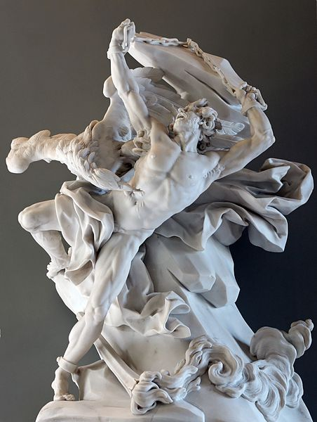
건물은 높아졌지만 인격은 더 작아졌다.
고속도로는 넓어졌지만 시야는 더 좁아졌다.
소비는 많아졌지만 더 가난해지고
더 많은 물건을 사지만 기쁨은 줄어들었다.
집은 커졌지만 가족은 더 적어졌다.
더 편리해졌지만 시간은 더 없다.
학력은 높아졌지만 상식은 부족하고
지식은 많아졌지만 판단력은 모자란다.
전문가들은 늘어났지만 문제는 더 많아졌고
약은 많아졌지만 건강은 더 나빠졌다.
너무 분별없이 소비하고 너무 적게 웃고
너무 빨리 운전하고 너무 성급히 화를 낸다.
가진 것은 몇배가 되었지만 가치는 더 줄어들었다.
말은 너무 많이 하고 사랑은 적게 하며 거짓말은 너무 자주 한다.
생활비를 버는 법은 배웠지만 어떻게 살 것인가는 잊어버렸고
인생을 사는 시간은 늘어났지만 시간 속에 삶의 의미를 넣은 법은 상실했다.
달에 갔다 왔지만 길을 건너가 이웃을 만나기는 더 힘들어졌다.
외계를 정복했는지 모르겠지만 우리 안의 세계는 잃어버렸다.
공기 정화기는 갖고 있지만 영혼은 더 오염되었고
원자, 분자는 쪼갤 수 있지만 편견을 부수지는 못한다.
유혹은 더 늘었지만, 열정은 더 줄어들었다.
키는 커졌지만 인품은 왜소해지고
이익은 더 많이 추구하지만 관계는 더 나빠졌다.
여가 시간은 늘어났어도 마음의 평화는 줄어들었다.
더 빨라진 고속철도 더 편리한 일회용 용품들 더 많은 광고 전단 더 줄어든 양심
쾌락을 즐끼게 하는 더 많은 약들
쇼원도에는 수많은 상품들이 전시되어 있지만
저장고에는 아무 것도 남아 있지 않은 시대
우리 시대의 역설/제프 딕슨
---------------------------------------------------------------------
The paradox of our time in history is that...
We have taller buildings, but shorter tempers.
We have wider freeways, but narrower viewpoints.
We spend more, but have less.
We buy more, but enjoy it less.
We have bigger houses and smaller families.
We have more conveniences, but less time.
We have more degrees, but less sense.
We have more knowledge, but less judgment.
We have more experts, but more problems.
We have more medicine, but less wellness.
We drink too much, smoke too much, spend to recklessly,
laugh too little, drive too fast, get too angry too quickly, stay up too late,
get up too tired, read to seldom, watch TV too much, and pray too seldom.
We have multiplied our possessions, but reduced our values.
We talk too much, love too seldom, and hate too often.
We've learned how to make a living, but not a life.
We've added years to life, not life to years.
We'v been all the way to moon and back, but have trouble crossing the street to meet the new neighbor.
We've conquered outer space, but not inner space.
We've done larger things, but not better things.
We've cleaned up the air, but polluted the soul.
We've split the atom, but not our prejudice.
We write more, but learn less.
We plan more, but accomplish less.
We've learn to rush, but not to wait.
We build more computers to hold more information to produce more copies than ever, but have less communication.
These are the times of fast food and slow digestion.
There are the times of tall men, and short character.
There are the times of steep profit, and shallow relationships.
These are the times of world peace, but domestic warfare.
These are the times of more leisure, but less fun.
These are the times of more kinds of food, but less nutrition.
These are the days of two incomes, but more divorce.
These are the days of fancier houses, but broken homes.
It is a time when there is much in the show window and nothing in the stockroom.
It is a time when technology can bring this letter to you, and a time when you can choose either to share this insight, or just hit delete.
20130204

20130128
Git

http://bunhere.tistory.com/37
20130122
iptables
iptables -A INPUT -s 192.168.10.1 -j DROP
192.168.10.1 IP의 모든 포트 막기
iptables -A INPUT -s 192.168.10.0/24 -j DROP
192.168.10.* 의 모든 IP 모든 포트 막기
iptables -D INPUT 2
INPUT rule의 2번 삭제
20130114
20130111
인생의 즐거움
NO Coffee, No Milk
20130109
Recurrence relation
20130101